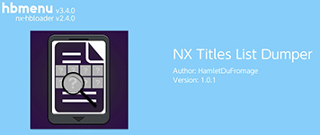

Offline NC-GIXC¶
offline is a good way to keep your nxgic folder clean and prevents it looking at the entire icon repo everytime you load up, you can manually add updates and your own icons
Download and extract NX-GIC
Make a new Folder Called Main
open nx-gic and select Work Offline
File > Work Offline
Now Download a release of the Game Icon Repo
&logo=gitlfs&logoColor=white&style=flat-square)
Open the freshly downloaded zip and navigate into the zip
extract or drag & drop the Vertical folder from Inside the zip file into the Main folder
inside the NX-GIC Directory
Be sure the structure is correct inside Main/Vertical/ folder
info
refer to online guide for Setting up NX-Titles-Dumper if you run into and problems
Download NX Titles List Dumper and place the .nro into the sdmc:/Switch/ folder on the SD
load nx-titles-list-dumper from hbmenu

press to dump your installed title IDs
this will place a file into SD:/titles.csv once it's done
press to exit
once SD:/titles.csv is dumped
transfer titles.csv into the same folder as NX-GIC
open nx-gic File > Settings and put the csv location into Installed Titles List (CSV)
1.4.0 Bug
CLOSE nx-gic after clicking save then re-open it
Click SCAN and if everything was done correctly you should now see all the icons.
Now you can work offline if you wish to transfer icons it's worth checking the other guide
adding your own icons can easily be done keeping the file name structure:
mariokart-8-deluxe-icon001-[0100152000022000] |
|---|
GAME-NAME-iconXXX-[titleID]-(Optional-username) |
vertical icons start out at 600px x 900px (2:3 ratio) and must to resized to 256px x 256px save as jpg non-progressive and keep the filesize under 120kb otherwise they may not load